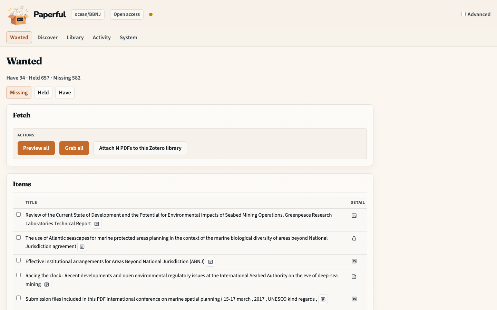
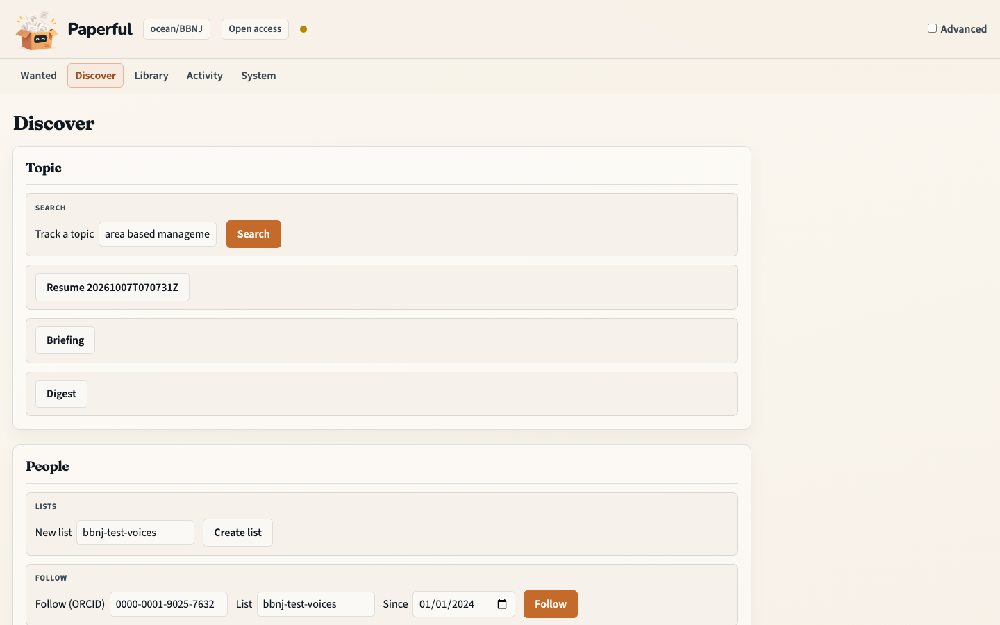
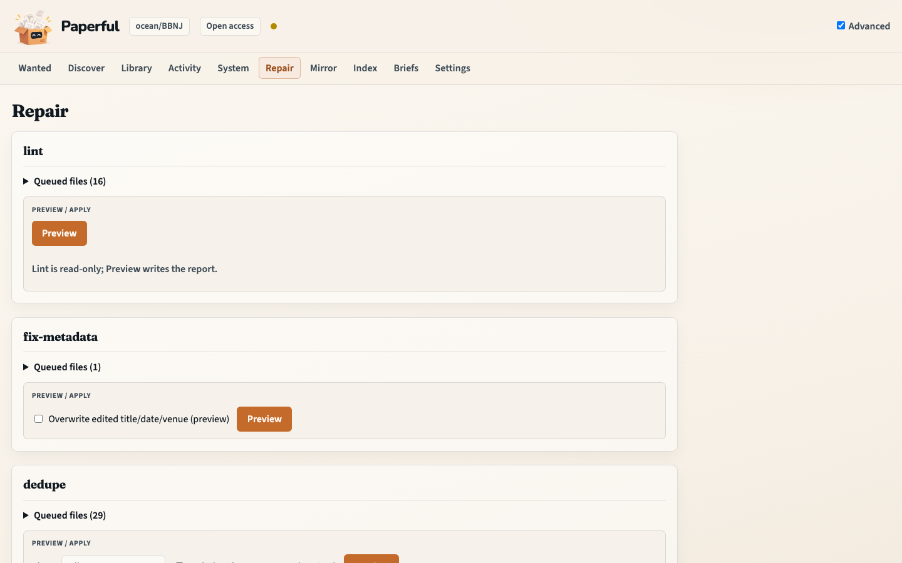
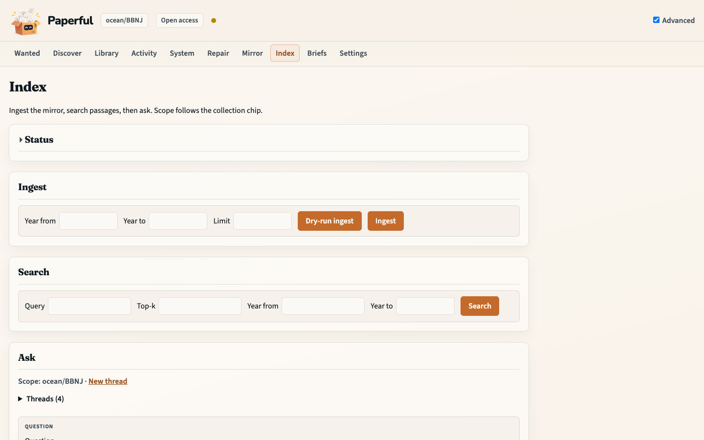

Find missing PDFs.
Clean up your library.
Keep control of your papers.
Fill the gaps in the Zotero library you already keep. Open access first, campus when you have it. A folder copy stays on this machine — yours to back up or take elsewhere.
The application
See what’s missing, grow the collection, tidy the records, then ask the PDFs you already have.




What can I do with it?
- Fill missing PDFs — free copies first, campus access when you have it
- Grow the library from a topic search or from people you follow
- Tidy duplicates, identifiers, and broken attachments
- Keep a folder copy you can back up or hand to another tool
- Ask the papers you already have — optional local AI, off until you turn it on
On your machine
Downloads, notes, and the folder copy stay on this computer. Zotero remains the catalogue. Optional AI uses Ollama locally and stays off until you turn it on. Paperful is not a sync service and not Zotero in the browser.
From a collection to PDFs you trust
- Open the workbench and pick a collection.
- On Wanted, preview what’s missing, then fetch copies onto this machine.
- Open the files yourself. Attach the ones you trust into Zotero.
- Grow the library on Discover, or tidy records on Repair, when you need those jobs.
Install
Build on your machine — there is no app store package and no published image. Keep Zotero on the host with the local API enabled, then open the workbench at http://127.0.0.1:8765.
git clone https://github.com/glen-w/Paperful.git
cd Paperful
cp .env.example .env
cp config.minimal.toml config.toml # set email
docker compose build
docker compose run --rm paperful doctor
docker compose up
Set a real email in config (Unpaywall) and edit
.env — renaming the examples is not enough.
Docker · Zotero · First fill · README